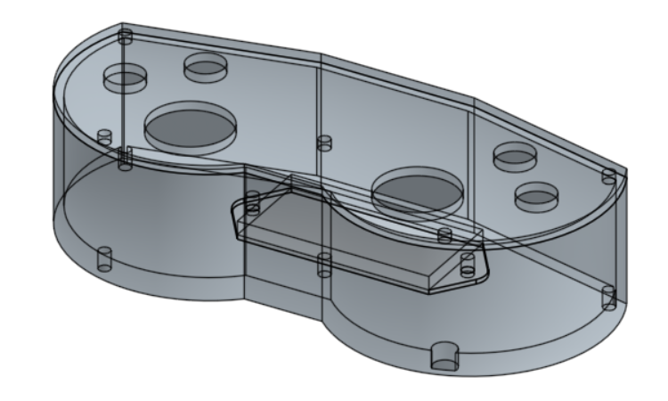

Mechanical
Design and physical components of M-O.
Overview
Our goal was to create a movie accurate replica of M-O from the Disney movie WALL-E. While designing our version of M-O, we heavily referenced a 3D render that was found online. Furthermore, we designed everything by hand as there were no pre-existing CAD models that we could use as a base for our design.
The body was created in a series of stages - a simple cardboard box, a laser cut box, a skeleton laser cut box, and the final body. The main materials used in the final project were plywood, acrylic, and PLA. All of our parts were either 3D printed or laser cut. The curved features of the head were made by heating acrylic with a heat gun and then bending it.
Design Process
Body
The first step in designing the body was determining what size to make it. We wanted to make the size as accurate to the movie as possible, so we found the official heights of some of the characters in the main cast of WALL-E and calculated the proportion of their pixel height to M-O's pixel height. As a result, we decided to go with 9''x9''x9'' box for our skeleton.
One of our other design requirements was to make the top of the box easily removable in order to allow enough space to fit our hands into or for more components. We designed the shell first and then created a similarly shaped skeleton inside.
The skeleton was manufactured by laser cutting ¼’’ plywood in order to get exact measurements and straight edges. The laser cutter was also used to make holes in the acrylic sheets that were then heat bent over the skeleton to create the curved shells on M-O's head and body.
Head
The head of M-O was designed using the same process as the body for the overall shape and structure. The neck of M-O made to hold the head to the body was designed as a column to match the cylindrical nature of M-O's actual neck, though we couldn't replicate all its functionality. Initially we set out to design a neck that would both enable M-O's head to turn side-to-side and raise up and down, however after finding these goals unrealistic we settled for a head that could only pan side-to-side.
This was achieved with a servo sitting at the base of the neck with four ball bearings on a circular track around it, allowing it to rotate while providing more balance than we would have putting all the head's weight on one servo. Four laser-cut supports then extend from the circular servo attachment and are secured to the top panel of the head's skeleton.
Arms
We replicated M-O's arms by basing them off of an off-centered ellipse. We decided to 3D print the arms in order to ensure that the smooth, curved edges of the arms were present on our version. 3D printing also allowed us to make cutouts in the arms that exactly matched the bearings holding M-O's roller and the insertion point of the servo horn. One of our initial prototypes used plywood laser cut arms while we were still working out the design of the 3D printed arms.
We additionally created a roller for M-O to hold, much like the one that he cleans with in the movie. Unlike his movie counterpart, our M-O's roller is not powered; however, it is a dead axle, meaning that it can spin. The roller was manufactured by 3D printing the main cylinder and then attaching little extruded pieces to it that represent its texturing.
Shell
The shell of the body was designed first as it determined the exterior dimensions and appearance of a majority of the system. It was initially made as a hollowed out box with a lofted front edge, and we made adjustments, mostly holes for mounting components, over time.
Initially, we were going to use a vacuum former to manufacture the shell; however, we discovered that the vacuum former available to us had a height limit of 6''. While we could have resized M-O to meet this constraint, we wanted to maintain accuracy to the movie and started looking for other options. Since only the front and back panels actually have curves, we decided to make the shell cover just those, as opposed to the whole body. We laser cut acrylic to the dimensions that we wanted, mounted it to the skeleton, and then used a heat gun to bend the acrylic over the corners that we wanted to be curved. Once all of the panels were bent, we took them off and spray painted the interior with white, allowing for a glossy finish and to reduce the likelihood of the paint coming off after significant use.
Controller
We created a custom remote controller to pair with M-O.
Reasons for custom controller:
- Customization of buttons & locations based on what M-O does
- Learning goals to work with various electrical components
- Easy radio chip integration to communicate with M-O
- Wanted an “old-school” style of controller
- Shaped like WALL-E eyes!
First, we determined the number of buttons we were able to put on M-O. The limiting factor for number of buttons was how many pins we had available in an Arduino after connecting the radio. Ultimately, we ended up having two joysticks and six buttons on the controller.
Next, we decided what each of the electronics would do. We decided to follow a common convention in video games where the left joystick controls player movement and made our left joystick control M-O;s drivebase. Furthermore, we set the other joystick to control the head movement, which ultimately ended up only being mechanically implemented in the x-direction.
We also wanted to allow the controller to move the arms up and down slightly, so we put those on the “bumpers”. Holding down this button will continue to move the arm in a single direction until it hits our soft limit.
The remaining four buttons were split between features and overall body animations. The buttons on the left side are for animated expressions - specifically M-O being happy or angry. The buttons on the other side of the controller were for just M-O's face - one opens and closes the eyes depending on their current state, and the other cycles through the various pre-programmed expressions he has.
After determining the button & joystick functions and layout, we started looking at other electronics that needed to fit in the controller: an Arduino Nano, a 9V battery, and a radio chip. These were moved around until they fit into a configuration with the other electronics that kept the maximum size of the controller relatively close to that of a current Xbox controller for maximum user comfort. The final configuration can be seen below:
We then designed the body of the controller around the electronics, which went through three revisions seen below:
The initial version of the controller was a simple box around the electronics layout to give us an idea for sizing.
The second version of the controller was shaped based on WALL-E's eyes and “old-school” controllers. The components fit together nicely into it, but there were a few problems with the buttons falling into it when pressed due to lack of back support.
The third and final version of the controller resolves some of the major issues form the second version and also reduces the thickness of the overall model. It is a tight fit for all of the components, though.
Finally, we wired up the components. A few minor changes had to be made - including running a power and ground rail on the inside of the controller, but overall, it was functional: